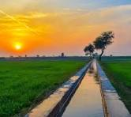
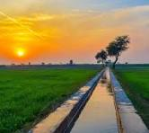

PUNJAB
Punjab is the Largest Province of Pakistan
Let,s See View of Punjab

 

History of Punjab
Punjab (/pʌnˈdʒɑːb/; Punjabi, Urdu: پنجاب, pronounced [pəɳˈdʒɑːb] ⓘ; abbr. PB) is a province of Pakistan. Located in central-eastern region of the country, Punjab is the second-largest province of Pakistan by land area and the largest by population. Lahore is the capital and the largest city of the province. Other major cities include Faisalabad, Rawalpindi, Gujranwala and Multan. It is bordered by the Pakistani provinces of Khyber Pakhtunkhwa to the north-west, Balochistan to the south-west and Sindh to the south, as well as Islamabad Capital Territory to the north-west and Azad Kashmir to the north. It shares an international border with the Indian states of Rajasthan and Punjab to the east and Indian-administered Kashmir to the north-east. Punjab is the most fertile province of the country as River Indus and its four major tributaries Ravi, Jhelum, Chenab and Sutlej flow through it. The province forms the bulk of the transnational Punjab region, now divided among Pakistan and India.[7] The provincial capital is Lahore — a cultural and cosmopolitan centre of Pakistan. Punjab is also the world's fifth-most populous subnational entity, and the most populous outside of China and India. Punjab is Pakistan's most industrialized province, with the industrial sector comprising 24 percent of the province's gross domestic product.[8] It is known for its relative prosperity,[9] and has the lowest rate of poverty among all Pakistani provinces.[10][b] However, a clear divide is present between the northern and southern regions of the province;[9] with northern Punjab being more prosperous than south Punjab.[11][12] Punjab is also one of the most urbanized regions of South Asia, with approximately 40 percent of its population being concentrated in urban areas.[13] The Punjabic peoples are native to the province, comprising over 90 percent of the total population. The culture of Punjab has been strongly influenced by Sufism, with numerous Sufi shrines spread across the province.[14] Guru Nanak, the founder of Sikhism, was born in the town of Nankana Sahib, near Lahore.[15][16][17] Punjab is also the site of the Katas Raj Temples, which feature prominently in Hindu mythology.[18] Several of the World Heritage Sites listed by UNESCO are located in Punjab, including the Shalimar Gardens, the Lahore Fort, the archaeological excavations at Taxila, and the Rohtas Fort, among others.[19]